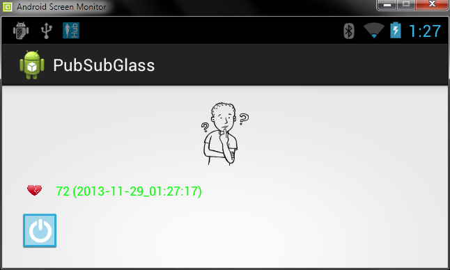

Suppose you got your hand on those first ever manufactured Google Glass Products, and being a enthusiastic athlete you also own a Polar Bluetooth Heart Rate Monitor (it's the only device we currently supported).
Wouldn't it be great to see your heart rate in your Google Glass while running?! ;)On this page we will introduce you to the ability of intergrating the myHealthAssistant project into Google Glass, explore a very promissing feature: bluetooth communication with healthcare monitoring device. Many healthcare monitoring devices focu on smart phones to communicate over bluetooth. Since Google Glass has also Bluetooth connectivity, the goal of this page is to allow Google Glass to read pulse sensor data. Warning: this tutorial is only for Geeks, follow it if you consider yourself one!
Software Requirements
By default, a smart phone Android app does not run on Google Glass, therefore, we have to perform the following steps to enable that functionality:- ADB Tools: Android Debug Bridge helps communicating with the Android device from Command Line tool. It comes within Android SDK tools kit. If you installed ADT Bundle on computer before then no need to care for it.
- Enable Debug mode in Glass: In order to deploy and debug apps running on Glass, you must first enable debug mode on Glass as follow:
Go to Settings -> Navigate to DeviceInfo -> Tap to enable Debug
- Android Screen Monitor: Android Screen Monitor (ASM) is a tool to monitor the screen on the device or emulator (because seeing through the tiny little screen of Glass is sometimes frustrating!). After downloading, open command line, locate the folder and run it by typing:
java -jar asm.jar -
Launcher2 and Settings apk: Launcher2 allows most native android apps to run on Glass without affecting general usability of Glass too much. Settings apk is used to change settings and bluetooth activity. To install navigate to the downloaded place and on command line type:
For more infos go here. After successfull installation the launcher and settings can be accessed from the Glass settings like below:adb install 'apk-name' -
Pairing with Sensors: By now Glass can act like an android phone, so all other steps are just like before
Open Settings -> Bluetooth -> Device Searching When prompted to input the pin, using adb from the command line:
Paired Sensor:adb shell input text '1234'(varies from sensor to sensor) -
Install myHealthHub on Glass is the same as deploy it on a smart phone. You can use Eclipse to do so.

Run myHealthHub on Google Glass
As you can see, we can now read access the heart rate sensor data from Glass the same way as on the smart phone. It's really interesting to see how in the future something like this can be fully integrated into Glass and other wearable devices.
Have fun coding!